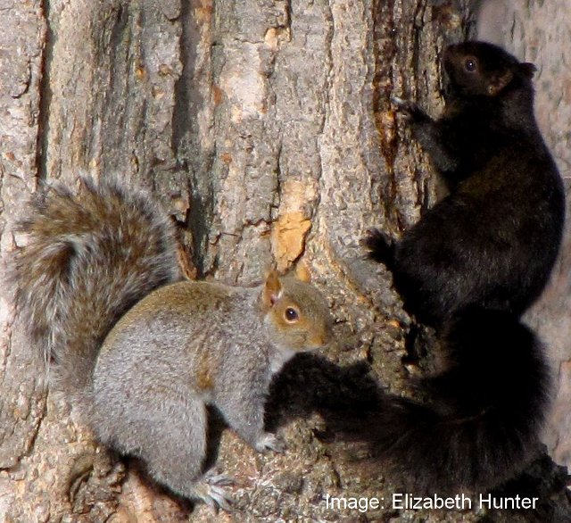
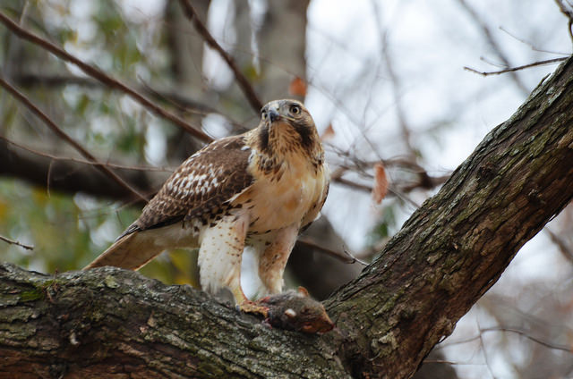
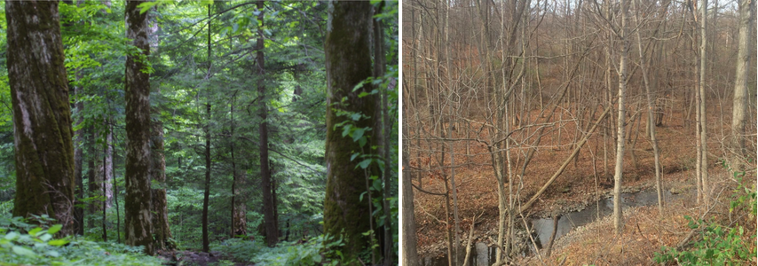

<!DOCTYPE html>

<html>

<head>

<meta charset="utf-8" />
<meta name="generator" content="pandoc" />
<meta http-equiv="X-UA-Compatible" content="IE=EDGE" />


<title>SquirrelMapper</title>

<script src="site_libs/jquery-3.6.0/jquery-3.6.0.min.js"></script>
<meta name="viewport" content="width=device-width, initial-scale=1" />
<link href="site_libs/bootstrap-3.3.5/css/cosmo.min.css" rel="stylesheet" />
<script src="site_libs/bootstrap-3.3.5/js/bootstrap.min.js"></script>
<script src="site_libs/bootstrap-3.3.5/shim/html5shiv.min.js"></script>
<script src="site_libs/bootstrap-3.3.5/shim/respond.min.js"></script>
<style>h1 {font-size: 34px;}
       h1.title {font-size: 38px;}
       h2 {font-size: 30px;}
       h3 {font-size: 24px;}
       h4 {font-size: 18px;}
       h5 {font-size: 16px;}
       h6 {font-size: 12px;}
       code {color: inherit; background-color: rgba(0, 0, 0, 0.04);}
       pre:not([class]) { background-color: white }</style>
<script src="site_libs/navigation-1.1/tabsets.js"></script>
<script src="site_libs/accessible-code-block-0.0.1/empty-anchor.js"></script>
<link href="site_libs/font-awesome-5.1.0/css/all.css" rel="stylesheet" />
<link href="site_libs/font-awesome-5.1.0/css/v4-shims.css" rel="stylesheet" />
<!DOCTYPE html PUBLIC "-//W3C//DTD HTML 4.01//EN" "http://www.w3.org/TR/html4/strict.dtd">
<html>
<head>
  <meta http-equiv="Content-Type" content="text/html; charset=utf-8">
  <meta http-equiv="Content-Style-Type" content="text/css">
  <title>SquirrelMapper</title>
  <meta name="Generator" content="Cocoa HTML Writer">
  <meta name="CocoaVersion" content="1504">
  <!-- this script changes the anchor position -->
  <!-- http://jsfiddle.net/ianclark001/rkocah23/ -->
<script>
(function(document, history, location) {
  var HISTORY_SUPPORT = !!(history && history.pushState);

  var anchorScrolls = {
    ANCHOR_REGEX: /^#[^ ]+$/,
    OFFSET_HEIGHT_PX: 65,

    /**
     * Establish events, and fix initial scroll position if a hash is provided.
     */
    init: function() {
      this.scrollToCurrent();
      $(window).on('hashchange', $.proxy(this, 'scrollToCurrent'));
      $('body').on('click', 'a', $.proxy(this, 'delegateAnchors'));
    },

    /**
     * Return the offset amount to deduct from the normal scroll position.
     * Modify as appropriate to allow for dynamic calculations
     */
    getFixedOffset: function() {
      return this.OFFSET_HEIGHT_PX;
    },

    /**
     * If the provided href is an anchor which resolves to an element on the
     * page, scroll to it.
     * @param  {String} href
     * @return {Boolean} - Was the href an anchor.
     */
    scrollIfAnchor: function(href, pushToHistory) {
      var match, anchorOffset;

      if(!this.ANCHOR_REGEX.test(href)) {
        return false;
      }

      match = document.getElementById(href.slice(1));

      if(match) {
        anchorOffset = $(match).offset().top - this.getFixedOffset();
        $('html, body').animate({ scrollTop: anchorOffset});

        // Add the state to history as-per normal anchor links
        if(HISTORY_SUPPORT && pushToHistory) {
          history.pushState({}, document.title, location.pathname + href);
        }
      }

      return !!match;
    },
    
    /**
     * Attempt to scroll to the current location's hash.
     */
    scrollToCurrent: function(e) { 
      if(this.scrollIfAnchor(window.location.hash) && e) {
        e.preventDefault();
      }
    },

    /**
     * If the click event's target was an anchor, fix the scroll position.
     */
    delegateAnchors: function(e) {
      var elem = e.target;

      if(this.scrollIfAnchor(elem.getAttribute('href'), true)) {
        e.preventDefault();
      }
    }
  };

    $(document).ready($.proxy(anchorScrolls, 'init'));
})(window.document, window.history, window.location);
</script>

<!-- this script changes the anchor position -->
<!-- http://jsfiddle.net/ianclark001/rkocah23/ -->
<script>
(function(document, history, location) {
  var HISTORY_SUPPORT = !!(history && history.pushState);

  var anchorScrolls = {
    ANCHOR_REGEX: /^#[^ ]+$/,
    OFFSET_HEIGHT_PX: 50,

    /**
     * Establish events, and fix initial scroll position if a hash is provided.
     */
    init: function() {
      this.scrollToCurrent();
      $(window).on('hashchange', $.proxy(this, 'scrollToCurrent'));
      $('body').on('click', 'a', $.proxy(this, 'delegateAnchors'));
    },

    /**
     * Return the offset amount to deduct from the normal scroll position.
     * Modify as appropriate to allow for dynamic calculations
     */
    getFixedOffset: function() {
      return this.OFFSET_HEIGHT_PX;
    },

    /**
     * If the provided href is an anchor which resolves to an element on the
     * page, scroll to it.
     * @param  {String} href
     * @return {Boolean} - Was the href an anchor.
     */
    scrollIfAnchor: function(href, pushToHistory) {
      var match, anchorOffset;

      if(!this.ANCHOR_REGEX.test(href)) {
        return false;
      }

      match = document.getElementById(href.slice(1));

      if(match) {
        anchorOffset = $(match).offset().top - this.getFixedOffset();
        $('html, body').animate({ scrollTop: anchorOffset});

        // Add the state to history as-per normal anchor links
        if(HISTORY_SUPPORT && pushToHistory) {
          history.pushState({}, document.title, location.pathname + href);
        }
      }

      return !!match;
    },
    
    /**
     * Attempt to scroll to the current location's hash.
     */
    scrollToCurrent: function(e) { 
      if(this.scrollIfAnchor(window.location.hash) && e) {
        e.preventDefault();
      }
    },

    /**
     * If the click event's target was an anchor, fix the scroll position.
     */
    delegateAnchors: function(e) {
      var elem = e.target;

      if(this.scrollIfAnchor(elem.getAttribute('href'), true)) {
        e.preventDefault();
      }
    }
  };

    $(document).ready($.proxy(anchorScrolls, 'init'));
})(window.document, window.history, window.location);
</script>

</head>
<body>
</body>
</html>

<style type="text/css">
  code{white-space: pre-wrap;}
  span.smallcaps{font-variant: small-caps;}
  span.underline{text-decoration: underline;}
  div.column{display: inline-block; vertical-align: top; width: 50%;}
  div.hanging-indent{margin-left: 1.5em; text-indent: -1.5em;}
  ul.task-list{list-style: none;}
    </style>


<link rel="stylesheet" href="styles.css" type="text/css" />


<style type = "text/css">
.main-container {
  max-width: 940px;
  margin-left: auto;
  margin-right: auto;
}
img {
  max-width:100%;
}
.tabbed-pane {
  padding-top: 12px;
}
.html-widget {
  margin-bottom: 20px;
}
button.code-folding-btn:focus {
  outline: none;
}
summary {
  display: list-item;
}
pre code {
  padding: 0;
}
</style>


<style type="text/css">
.dropdown-submenu {
  position: relative;
}
.dropdown-submenu>.dropdown-menu {
  top: 0;
  left: 100%;
  margin-top: -6px;
  margin-left: -1px;
  border-radius: 0 6px 6px 6px;
}
.dropdown-submenu:hover>.dropdown-menu {
  display: block;
}
.dropdown-submenu>a:after {
  display: block;
  content: " ";
  float: right;
  width: 0;
  height: 0;
  border-color: transparent;
  border-style: solid;
  border-width: 5px 0 5px 5px;
  border-left-color: #cccccc;
  margin-top: 5px;
  margin-right: -10px;
}
.dropdown-submenu:hover>a:after {
  border-left-color: #adb5bd;
}
.dropdown-submenu.pull-left {
  float: none;
}
.dropdown-submenu.pull-left>.dropdown-menu {
  left: -100%;
  margin-left: 10px;
  border-radius: 6px 0 6px 6px;
}
</style>

<script type="text/javascript">
// manage active state of menu based on current page
$(document).ready(function () {
  // active menu anchor
  href = window.location.pathname
  href = href.substr(href.lastIndexOf('/') + 1)
  if (href === "")
    href = "index.html";
  var menuAnchor = $('a[href="' + href + '"]');

  // mark it active
  menuAnchor.tab('show');

  // if it's got a parent navbar menu mark it active as well
  menuAnchor.closest('li.dropdown').addClass('active');

  // Navbar adjustments
  var navHeight = $(".navbar").first().height() + 15;
  var style = document.createElement('style');
  var pt = "padding-top: " + navHeight + "px; ";
  var mt = "margin-top: -" + navHeight + "px; ";
  var css = "";
  // offset scroll position for anchor links (for fixed navbar)
  for (var i = 1; i <= 6; i++) {
    css += ".section h" + i + "{ " + pt + mt + "}\n";
  }
  style.innerHTML = "body {" + pt + "padding-bottom: 40px; }\n" + css;
  document.head.appendChild(style);
});
</script>

<!-- tabsets -->

<style type="text/css">
.tabset-dropdown > .nav-tabs {
  display: inline-table;
  max-height: 500px;
  min-height: 44px;
  overflow-y: auto;
  border: 1px solid #ddd;
  border-radius: 4px;
}

.tabset-dropdown > .nav-tabs > li.active:before {
  content: "";
  font-family: 'Glyphicons Halflings';
  display: inline-block;
  padding: 10px;
  border-right: 1px solid #ddd;
}

.tabset-dropdown > .nav-tabs.nav-tabs-open > li.active:before {
  content: "&#xe258;";
  border: none;
}

.tabset-dropdown > .nav-tabs.nav-tabs-open:before {
  content: "";
  font-family: 'Glyphicons Halflings';
  display: inline-block;
  padding: 10px;
  border-right: 1px solid #ddd;
}

.tabset-dropdown > .nav-tabs > li.active {
  display: block;
}

.tabset-dropdown > .nav-tabs > li > a,
.tabset-dropdown > .nav-tabs > li > a:focus,
.tabset-dropdown > .nav-tabs > li > a:hover {
  border: none;
  display: inline-block;
  border-radius: 4px;
  background-color: transparent;
}

.tabset-dropdown > .nav-tabs.nav-tabs-open > li {
  display: block;
  float: none;
}

.tabset-dropdown > .nav-tabs > li {
  display: none;
}
</style>

<!-- code folding -->


</head>

<body>


<div class="container-fluid main-container">


<div class="navbar navbar-default  navbar-fixed-top" role="navigation">
  <div class="container">
    <div class="navbar-header">
      <button type="button" class="navbar-toggle collapsed" data-toggle="collapse" data-target="#navbar">
        <span class="icon-bar"></span>
        <span class="icon-bar"></span>
        <span class="icon-bar"></span>
      </button>
      <a class="navbar-brand" href="index.html">SquirrelMapper</a>
    </div>
    <div id="navbar" class="navbar-collapse collapse">
      <ul class="nav navbar-nav">
        <li>
  <a href="index.html">Home</a>
</li>
<li>
  <a href="about.html">About</a>
</li>
<li>
  <a href="results.html">Results</a>
</li>
<li>
  <a href="map.html">Squirrel Map</a>
</li>
<li>
  <a href="squirrelspotter.html">Squirrel Spotter</a>
</li>
<li>
  <a href="faq.html">FAQ</a>
</li>
<li>
  <a href="contact.html">Contact</a>
</li>
      </ul>
      <ul class="nav navbar-nav navbar-right">
        <li>
  <a href="mailto:cosentino@hws.edu">
    <span class="fa fa-envelope"></span>
     
  </a>
</li>
<li>
  <a href="https://twitter.com/squirrelsevolve">
    <span class="fa fa-twitter"></span>
     
  </a>
</li>
      </ul>
    </div><!--/.nav-collapse -->
  </div><!--/.container -->
</div><!--/.navbar -->

<div id="header">


<h1 class="title toc-ignore">SquirrelMapper</h1>

</div>


<script type="text/javascript">
$('.title').remove()
</script>
<p><br></p>
<div id="research-question" class="section level2">
<h2><strong>Research question</strong></h2>
<hr>
<p></p>
<p>So-called “gray squirrels” and “black squirrels” are two color morphs of the same species: <a href="http://people.hws.edu/cosentino/squirrels/Mamm%20Spec%20Sciurus%20carolinensis%2094.pdf"><em>Sciurus carolinensis</em></a>. Until 150 years ago, the black morph <a href="https://en.wikipedia.org/wiki/Black_squirrel">was much more abundant</a>. Yet now the black morph is rare, except in cities. Why has the black morph declined? Why does it linger in cities? Will it return again to the countryside? The landscape is changing rapidly. Will the gray squirrel, and other mammals like it, be able to adapt quickly enough?</p>
<p><br> <br> <br> <br> <br></p>
</div>
<div id="genetics" class="section level2">
<h2><strong>Genetics</strong></h2>
<hr>
<p>Only a tiny genetic difference separates black versus gray morphs. All individuals contain a gene, MC1R, that controls how much dark pigment is added as a squirrel’s hairs grow. When a tiny piece of DNA is missing from this gene, it boosts production of dark pigment and makes the fur darker. When a squirrel has a single copy of the gene with the small piece of DNA deleted, or two copies of that altered gene, its fur is mostly black. Technically, the black morph is <a href="https://en.wikipedia.org/wiki/Melanism">melanic</a>. The gray morph has two copies of the complete gene. A tiny genetic difference, but being black or gray could have many consequences if you are a squirrel!</p>
</div>
<div id="contemporary-evolution" class="section level2">
<h2><strong>Contemporary evolution</strong></h2>
<hr>
<p>Squirrels that don’t blend in well with their backgrounds don’t survive as well. <em>What kills squirrels?</em> <strong>Predators</strong>…mainly hawks, foxes, and dogs. Humans also kill many squirrels: squirrel hunting is “big” in rural areas. But you can’t hunt in cities, so maybe that’s why black morphs more frequent in urban areas.</p>
<div class="figure" style="text-align: center">

<p class="caption">
Image by Andy Reago &amp; Chrissy McClarren at Flickr (License: <a href="https://creativecommons.org/licenses/by/2.0/">CC-BY-2.0</a>)
</p>
</div>
<p>There could be other forces at work. <strong>Our forests have changed</strong>. Originally forests of eastern North America were mostly <a href="https://en.wikipedia.org/wiki/Old-growth_forest">old growth</a> with pockets of darkness associated with enormous tree trunks, many vertical layers that generated shade, and more conifer trees with dark foliage. In these darker conditions perhaps the black morph could remain better hidden. Now virtually all old growth forests have disappeared.</p>
<p></p>
<p>The forests that have re-grown are <a href="https://en.wikipedia.org/wiki/Secondary_forest">secondary forest</a> with spindly trunks of mostly deciduous trees whose trunks and branches are much lighter-hued. In such forests might the gray morph be better hidden than the black morph from predators and hunters?</p>
<p>It gets even more interesting…<strong>urban areas have expanded</strong>. Urban areas may not just be refuges from hunting. In urban areas most squirrels are <strong>killed by cars</strong>. Most drivers try to avoid hitting animals even if they don’t always succeed. The sooner a driver sees a squirrel, the easier it is to avoid running it over. The gray morph has a remarkable similarity in hue to pavement, so may be harder for drivers to see. Does the black morph stand out better against a road surface and be more avoidable by car drivers, that is, survive better?</p>
<div class="figure" style="text-align: center">

<p class="caption">
Image by ncowey at iNaturalist (License: <a href="https://creativecommons.org/licenses/by-nc/2.0/">CC-BY-NC</a>)
</p>
</div>
</div>
<div id="how-can-you-participate-to-answer-these-questions" class="section level2">
<h2><strong>How can you participate to answer these questions?</strong></h2>
<hr>
<p>By engaging with the SquirrelMapper project you can contribute to an important scientific discovery about <em>evolution in action in our own backyards</em>. There are three ways that ANYONE can participate in the SquirrelMapper project:</p>
<ol style="list-style-type: decimal">
<li><p><strong>Contribute observations of squirrels to the <a href="https://www.inaturalist.org/projects/squirrelmapper">SquirrelMapper project on iNaturalist</a>.</strong> Over 100,000 photographs of squirrels have been submitted so far. When you submit an observation, the community of citizen scientists at iNaturalist confirm its identification. Once an observation is confirmed to be an eastern gray squirrel (a <a href="https://www.inaturalist.org/pages/help#quality">research grade</a> observation), we import the photo to our project site at Zooniverse for you to classify by its coat color.</p></li>
<li><p><strong>Classify the coat color of squirrels as gray or black at the <a href="https://www.zooniverse.org/projects/bcosentino/squirrelmapper">SquirrelMapper project on Zooniverse</a>.</strong> The coat color of each squirrel is confirmed through classifications by at least 10 users at Zooniverse. Once the color of a squirrel is classified, we map it, identify its habitat, and determine which morph occurs more often where. This lets us understand how quickly squirrels, and mammals like them, can adapt to changes in their habitats.</p></li>
<li><p><strong>Directly measure natural selection on squirrel coloration by playing our <a href="https://bcosentino.shinyapps.io/squirrelspotter/">SquirrelSpotter game</a>.</strong> In this game you will search for squirrels in scenes of old growth forests, secondary forests, and roads, and we measure how long it takes you to find gray and black squirrels in each scene. By participating in the game you will directly measure the selection pressures on black and gray squirrels in each environment.</p></li>
</ol>
<p><strong>Squirrel hunters &amp; pest management professionals:</strong> If you’re interested in contributing squirrel tissue from legally harvested squirrels to our studies, <strong><a href="hunters.html">please read more here</a></strong>.</p>
<p><strong>Researchers:</strong> If you’re interested on participating in a collaborative project to better understand the mechanisms of urban evolution, <strong><a href="clines.html">please read more here</a></strong>.</p>
<p><strong>Educators:</strong> We are building curriculuar materials for K12 education using squirrel coat color as a case study. We will soon have a dedicated web page with these materials, but in the mean time you can engage studnets in our interactive applications. Use our <a href="https://bcosentino.shinyapps.io/squirrelmapper/">SquirrelMapper map</a> to analyse how color morphs vary in prevalence from place to place. Use our <a href="https://bcosentino.shinyapps.io/squirrelspotter/">SquirrelSpotter game</a> to illustrate how natural selection works, and have student analyze their own data on how fast they can detect squirrels in different environments.</p>
</div>
<div id="want-to-learn-more" class="section level2">
<h2><strong>Want to learn more?</strong></h2>
<hr>
<p><strong>Our publications</strong></p>
<p><a href="https://www.nature.com/articles/s41598-022-05746-2">Cosentino, B.J. and J.P. Gibbs. 2022. Parallel evolution of urban-rural clines in melanism in a widespread mammal. Scientific Reports 12:1752.</a></p>
<p><a href="https://www.discovermagazine.com/planet-earth/city-squirrels-look-different-is-evolution-driving-a-color-change">Fischman, B.J., B.J. Cosentino, and J.P. Gibbs. 2021. City squirrels look different. Is evolution driving a color Change? Discover Magazine - Citizen Science Salon.</a></p>
<p>Gibbs, J.P., M.F. Buff., and B.J. Cosentino. 2019. The Biological System - Urban Wildlife, Adaptation, and Evolution: Urbanization as a Driver of Contemporary Evolution in Gray Squirrels (Sciurus carolinensis). In Understanding Urban Ecology. Email Brad Cosentino (<a href="mailto:cosentino@hws.edu" class="email">cosentino@hws.edu</a>) for a copy of this article.</p>
<p><strong>Other publications of interest</strong></p>
<p>A fascinating overview of the history of squirrels in urban areas: <em>The Urbanization of the Eastern Gray Squirrel in the United States</em>, Journal of American History 100, no. 3 (2013): 691-710 (.pdf available on author Etienne Benson’s <a href="http://etiennebenson.com/publications/">website</a>)</p>
<p>This <a href="https://99percentinvisible.org/episode/uptown-squirrel/">podcast</a> integrates much about our relationship with squirrels.</p>
<p>An <a href="https://academic.oup.com/jhered/article/100/6/709/834239">article</a> by Helen McRobie on gray squirrel morph genetics: The genetic basis of melanism in the gray squirrel (<em>Sciurus carolinensis</em>) Journal of Heredity 100: 709-714.</p>
</div>

<div id="footer">
<center>
<br>
<br>
<br>
<br>
<p>Last modified October 2022</p>
</center>
</div>


</div>

<script>

// add bootstrap table styles to pandoc tables
function bootstrapStylePandocTables() {
  $('tr.odd').parent('tbody').parent('table').addClass('table table-condensed');
}
$(document).ready(function () {
  bootstrapStylePandocTables();
});


</script>

<!-- tabsets -->

<script>
$(document).ready(function () {
  window.buildTabsets("TOC");
});

$(document).ready(function () {
  $('.tabset-dropdown > .nav-tabs > li').click(function () {
    $(this).parent().toggleClass('nav-tabs-open');
  });
});
</script>

<!-- code folding -->


<!-- dynamically load mathjax for compatibility with self-contained -->
<script>
  (function () {
    var script = document.createElement("script");
    script.type = "text/javascript";
    script.src  = "https://mathjax.rstudio.com/latest/MathJax.js?config=TeX-AMS-MML_HTMLorMML";
    document.getElementsByTagName("head")[0].appendChild(script);
  })();
</script>

</body>
</html>
